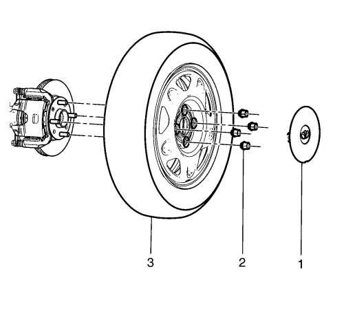
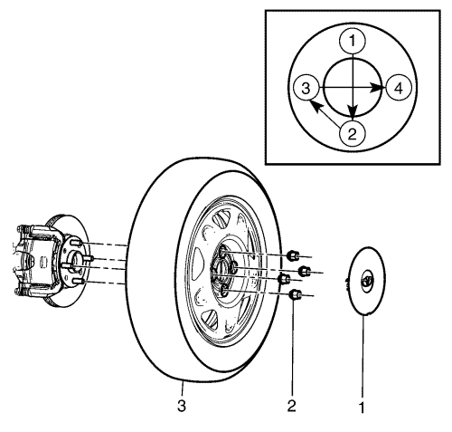

Desmontaje y montaje de la rueda y el neumático
Procedimiento de desmontaje
Atención: Consulte Elevación del vehículo con un gato en la sección Prólogo

- Elevar el vehículo y soportarlo de manera segura.
- Desmonte la tapa de rueda (1), si existe.
- Marque la rueda en relación con la brida del cubo de rueda.
- Retire las tuercas de la rueda (2).
Advertencia : Si el aceite penetrante alcanza las superficies verticales entre la rueda y el rotor o tambor, esto puede provocar que la rueda se afloje al poner en marcha el vehículo, causando una pérdida del control y un accidente con lesiones.
Atención: La extracción de la rueda puede resultar difícil debido a materiales extraños o a un ajuste tenso entre la rueda y el cubo/rotor. Golpee con cuidado la pared lateral del neumático con un martillo de goma para extraer la rueda. Si no se siguen estas instrucciones, pueden producirse daños en la rueda.
- Retire el conjunto de neumático y llanta (3) del vehículo. Si es difícil de mover el conjunto de neumático y llanta, realice los siguientes pasos:
| 5.1. | Monte y apriete todas las tuercas de la rueda en cuestión. |
| 5.2. | Afloje dos vueltas cada tuerca de la rueda. |
| 5.3. | Deposite el vehículo sobre el suelo. |
| 5.4. | Balancee el vehículo de lado a lado. |
Atención: Consulte Elevación del vehículo con un gato en la sección Prólogo
| 5.5. | Elevar el vehículo y soportarlo de manera segura. |
| 5.6. | Quite las tuercas de la rueda. |
| 5.7. | Desmonte la rueda del vehículo. |
Procedimiento de montaje
Advertencia : Antes de montar las ruedas, despegue toda la acumulación de corrosión de la superficie de soporte de la rueda y del tambor de freno o superficie de soporte del disco raspando y con escobilla de alambre. El montaje de las ruedas con un contacto insuficiente entre los metales de las superficies de soporte puede provocar la pérdida de las tuercas de la rueda. Esto puede provocar que una rueda se salga cuando el vehículo está en movimiento, causando una pérdida de control y posibles daños personales.
Nota: Las tuercas, los pernos y las superficies de soporte de la rueda deben estar limpios y secos.
- Retire cualquier corrosión o material extraño de las superficies de soporte de rueda y cubo.
- Limpie las roscas de los pernos y tuercas de la rueda.

- Monte el conjunto de neumático y llanta (3). Alinee la marca de ubicación de la rueda con el cubo.
Atención: Consulte Atención - fijaciones en la sección Prólogo
Nota: Apriete uniforme y alternativamente las tuercas en el orden mostrado para evitar un excesivo alabeo.
- Monte las tuercas de rueda (2) y apriételas en la secuencia indicada a 120 N·m (89 lib. pie).
- Monte la tapa de rueda (1), si existe.
- Deposite el vehículo sobre el suelo.
| © Copyright Chevrolet Europe. All rights reserved |